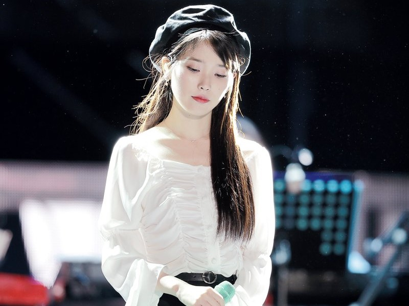
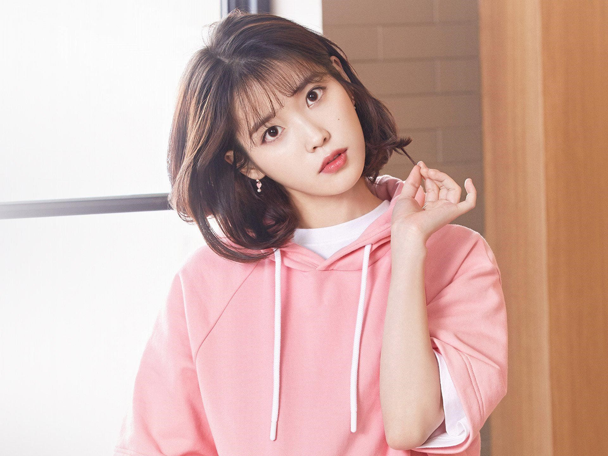
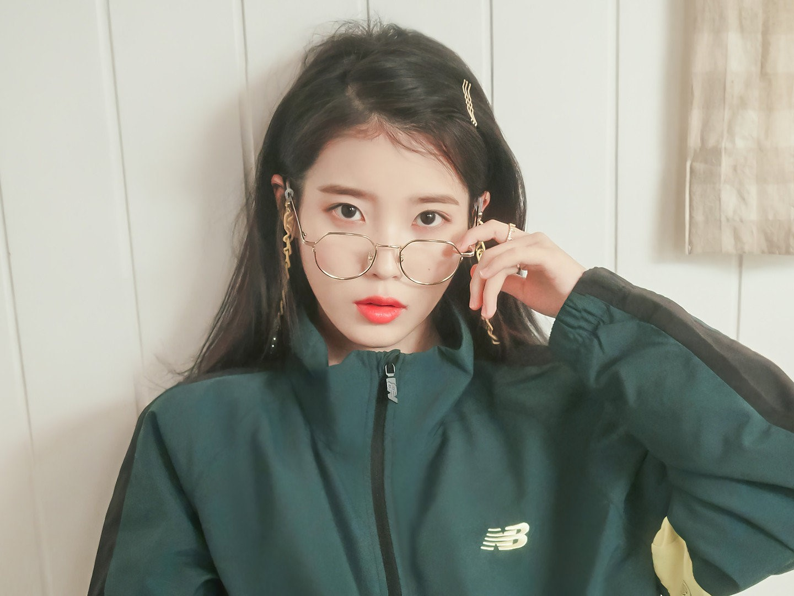

IU
个人简介
李知恩，英语：Lee Ji Eun，1993年5月16日，艺名IU，是一名韩国创作歌手。
早年生活
IU自小在首尔长大，与其父母和弟弟住在一起。IU上小学时，家庭经济状况恶化[13]，父母因为为他人作担保而欠下了巨债[14]，一家人被逼要分开生活，她和弟弟被迫与父母分开居住，与IU的奶奶和表姐在一间公寓中度过了一年多贫困的生活[15][16]。这一段时间，IU与她的父母接触不多，因而很感激奶奶的出现[16]。
在中学时，IU萌生了成为歌手的想法[17]。她曾先后参加过20次选拔但均被拒绝，并且曾被伪造的娱乐公司欺骗[18]。2007年10月，IU通过当时经纪公司LOEN娱乐的试镜，并成为练习生[19]。尽管认为经过三到四年的训练后她可能最终会被选入一个女子团体，但她在训炼10个月后便随即发行她的首张个人专辑[20]。因为曾经艰苦的生活，IU说她“喜欢在练习室”，在那里她可以吃她想吃的东西，并且有睡觉的地方[16]。在出道之前，LOEN娱乐将其艺名命名为“IU”。艺名从“我和你”（I
and You）中引申而出，象征着音乐在人与人之间所产生的凝聚力[20]。
重要事件
- 2008－2009年：出道
- 2010－2011年：人气高涨与电视剧出演
- 2012年：日本出道、《二十岁的春天》及首个演唱会
- 2013－2014年：《Modern Times》与《花书签》
- 2015－2016年：《制作人》、《月之恋人》、无限挑战歌谣祭与《CHAT-SHIRE》
- 2017－2018年：正规四辑《Palette》、《孝利家民宿》、第二张翻唱专辑《花书签2》、《我的大叔》与出道十周年单曲《BBIBBI》
- 2019－2020年：《Persona》、《德鲁纳酒店》、迷你五辑《Love Poem》与数位单曲《Eight》
- 2021年至今：正规五辑《LILAC》
主要作品
代表的音乐作品
- 2010年《好日子》
- 2011年《You & I》
- 2013年《Friday》
- 2017年《Palette》
- 2018年《BBIBBI》
- 2019年《Blueming》
- 2020年《eight》
- 2021年《Celebrity》
- 2021年《LILAC》
代表的电视剧
| 年份 |
电视台 |
剧名 |
角色 |
| 2011年 |
KBS |
梦想高飞 |
金碧淑 |
| Welcome To The Show |
李知恩 |
| 2012年 |
KBS |
梦想高飞 2 |
金碧淑 |
| SBS |
蝾螈道士和影子操作团 |
李知恩 |
| 2013年 |
KBS |
最佳李纯信 |
李纯信 |
| 漂亮男人 |
金普通 |
| 2015年 |
制作人们 |
赵仁英 (Cindy) |
| 2016年 |
SBS |
月之恋人－步步惊心：丽 |
解树／高夏真 |
| 2018年 |
tvN |
我的大叔 |
李至安[d] |
| 2019年 |
德魯納酒店 |
张满月 |
代表的电影电影
| 年份 |
名称 |
角色 |
| 2012年 |
萨米大冒险2 |
（配音） |
| 2017年 |
Real |
颁奖典礼的礼仪小姐 |
| 2021年 |
无人之境 |
美英 |
| Dream |
李素敏[e] |
| Broker |
|
主要成就
- 文化体育观光部奖
- 甜瓜音乐奖
- 韩国视觉艺术节
- 大韩民国表演艺术奖
- 金唱片奖
- Cyworld数位音乐奖
- 首尔音乐奖
- SBS演艺大赏
- 百想艺术大赏
- Mnet20代选择奖
- 韩国广告协会奖
- 首尔影像广告节
- 时尚偶像奖
- 韩国尼克儿童选择奖
- KBS演技大赏
- Gaon Chart K-POP大奖
- 亚洲模特儿大奖
- 韩国音乐大奖
- 韩国PD大赏
- 日本韩流10周年大奖
- 日本金唱片大奖
- SBS MTV Best of the Best
- Sona大奖
- DramaFever奖
- 世界音乐奖
- 新加坡e乐大赏
- 首尔国际电视节
- 首尔国际青少年电影节
- Mnet亚洲音乐大奖
- 韩国电视剧奖
- 韩国大众文化艺术大赏
- APAN Awards
- Soompi Awards
- SBS演技大赏
- I.K.M.A
- Asia Artist Award
- Korea First Brand Awards
生活照


